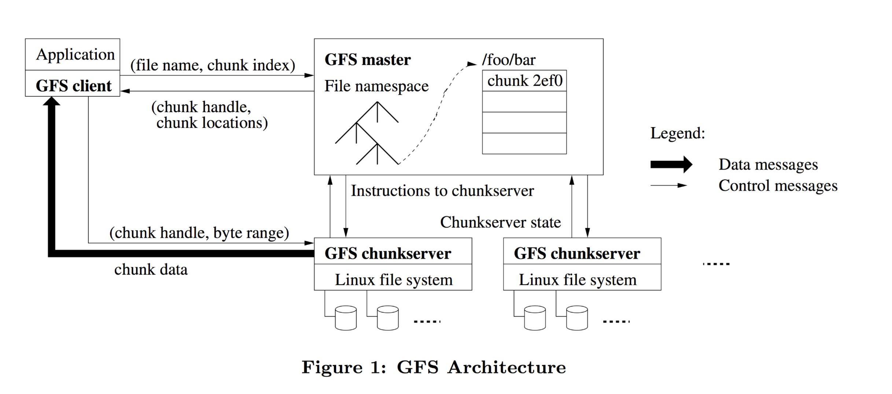

前段时间转岗了，放弃了node，转为普通的Java业务工程师，作为一个过渡。但梦想还是要有的。最近得空，赚钱之余还得努力提高自己。故又开始数据库和分布式系统的学习旅程。
Workroad
- 使用大量通用服务器情况下，存在发生故障的机器成为常态
- 读: 有大量巨大规模的数据存储的需求，对小文件的需求很少,文件操作具体为：
- 大量的流读，每次读取近M的数据，而且下一次读大概率是读取上次所读接下去的内容
- 少量的随机读
- 写：大量的追加写操作. 需要支持原子性的追加写以满足多路merge的需求。 随机写极少，支持就好
- 高吞吐率较低latency重要地多
架构

GFS采用单Master多Chunkserver的架构。 Master存储以下信息: